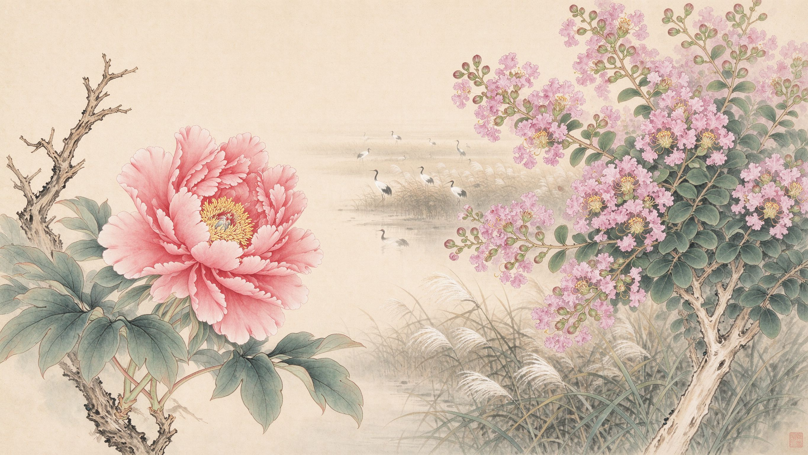
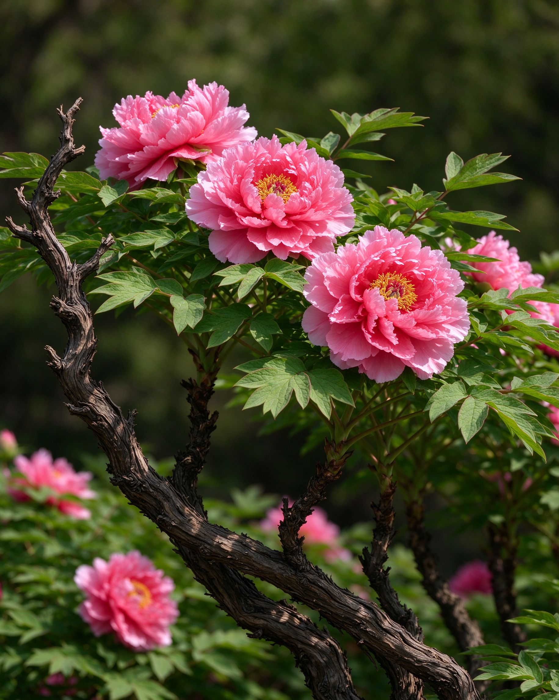
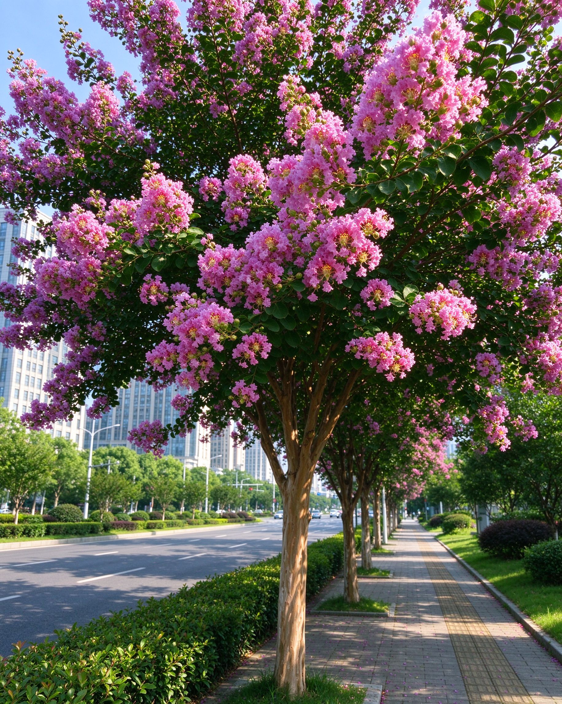

盐城，湿地之城，以牡丹与紫薇并列为市花。春看便仓枯枝牡丹七百年花信，夏赏满城紫薇紫霞浸透街巷——南北过渡带上的花事，一年两度盛开。

国色天香，便仓镇七百年奇花，《镜花缘》为之落笔。苍劲枯枝上开出姹紫嫣红，谷雨前后三日必放。

夏日常青，从六月开到九月，树干光滑如绢，被盐城人亲昵地叫作"痒痒树"，紫霞浸透街巷。
市花不是一次选定就一劳永逸。盐城的双市花经历过一次公开的调整——从 1991 年的组合到 2005 年的重选，背后是一次城市对"市民认不认、土地种不种得活"的诚实复盘。
建市后第一次评选。紫薇、石榴入选，但所选花木多从外地引种，合欢象征八路军与新四军在盐城会师，却易感病虫害，难以大面积推广；石榴在农村长势好，作为城市景观花却水土不服。
问题：市民十有八九不知市花为何由于选种脱离本地气候与街道场景，市花未在城市绿化中形成规模，公共认知度低。市民眼中的盐城之花，其实是便仓镇上那株自宋末就开着的枯枝牡丹。
盐城市人民政府向市人大常委会提交《关于提请调整"市树、市花"的议案》，启动公开调整程序，面向全市征求意见。
正式确定：市树 = 女贞、银杏；市花 = 紫薇、牡丹。保留紫薇，将石榴替换为牡丹。自此，盐城成为江苏继徐州、宿迁之外，又一以紫薇为市花的城市，且是唯一同时拥"花王牡丹 + 夏花紫薇"双市花的地级市。
现行市花制度起点市区道路、公园、绿化带持续扩大紫薇种植；每年谷雨前后，便仓枯枝牡丹园迎来赏花期；黄尖牡丹园、九龙口牡丹园、伍佑古镇相继成为春日赏花点。市花真正回到了街头。
中国绝大多数城市只有一种市花。盐城选择牡丹与紫薇并立，不是折中，而是地理、历史与市民生活三方共同投票的结果。
盐城地处北亚热带向暖温带过渡的分界线附近，是南方植物与北方植物在中国大陆东部罕见的交汇带。
便仓镇的枯枝牡丹自宋末栽培至今已逾 700 年，被李汝珍写入《镜花缘》，明、清《盐城县志》均有记载。
牡丹开在 4 月谷雨前后，紫薇从 6 月一直开到 9 月。两花并立，等于把"城市花事"拉长到整整一个春夏。
1991 年组合中的石榴，虽然在盐城农村长势不错，但花色花型偏市井、缺乏与本地文化的强绑定； 而枯枝牡丹在便仓已经自宋末开到了今天，有古籍、有古镇、有每年谷雨前后自发赶来的赏花人。 把牡丹补入市花，等于把一座城市在民间已经存在了七百年的"准市花"正式加冕。 保留紫薇，则是因为它从 1991 年起就被写进城市绿化，且花期横跨盛夏，是行道树里最熟悉的那一抹紫。
亭湖区便仓镇，一座见诸《宋史》的千年古镇。这里的牡丹"奇、特、怪、灵"—— 主干苍劲如枯柴，花开时却姹紫嫣红；每年谷雨前后三日必放，花信不误。 《镜花缘》里写下过它，明、清《盐城县志》里记着它，当地人更信一句老话："枯枝牡丹赏花要赏三年。"
"花王"牡丹自古是繁荣、华贵、吉祥的符号。盐城以它为市花，是在湿地、海盐、红色之外，亮出另一张文化面孔。
主干如枯柴、花开似云锦——这恰是盐城这片曾经"盐霜满地"的滩涂城市的隐喻：看似荒芜，骨子里蓬勃。
便仓因盐而兴，牡丹因镇而名。牡丹是把"海盐古镇"这条隐藏文脉可视化的方式，也是盐城人春天的集体记忆。
每年谷雨前后三日必开，这种"准点"对一座以农业、渔业、湿地为生的城市而言，本身就是一种时间秩序。
紫薇，落叶小乔木，树干光滑洁净，用手轻挠整树微颤，所以盐城人叫它"痒痒树"。 从 6 月一直开到 9 月，花期逾百日，故名"百日红"。 在盐城，紫薇不是被供在园子里的贵族花，而是种在黄海路、东亭湖公园、希望广场边—— 下班路上抬头就是一片紫霞。
花期长达百日，对应盐城作为滩涂新城"慢慢来、长得久"的城市气质——不喧哗，但持续。
紫薇是行道树、是街角绿化带。它不像牡丹那样被"朝拜"，而是每天被经过——这是真正属于市民的花。
江苏的夏天乔木少花。紫薇把 7、8 月的盐城染成紫粉色，让"市花"不止停留在春天的合照里。
"痒痒树"的雅俗共赏，是城市公共空间里少有的、可以被孩子伸手去逗一逗的植物——温柔、不端着。
春天追牡丹、夏天追紫薇。按花期排序，把全城最值得停的点串成两条路线。
亭湖区便仓镇，七百年枯枝牡丹，奇、特、怪、灵，《镜花缘》原型。
亭湖区黄尖镇，红粉白各色牡丹次第开放，春日踏青主场地。
通逾南路一带小院，洛阳红、赵粉、姚黄等五十余品种，千年古镇里的国色。
建湖县九龙口国家湿地公园，水乡春色与牡丹花海相映。
亭湖区，紫薇成林，傍晚紫霞逆光最好出片。
城市主轴紫薇长廊，骑车慢行最佳。
市中心市民日常散步点，紫薇与市民生活同框。
滨海大道、中市北路一带，城郊大片紫薇花海。
一条线在城里、一条线在古镇；春天往南去便仓，夏天在城里绕一圈。 两条线走完，你就集齐了盐城双市花的全部花信——去打卡页勾上它们吧。
每到一个点就点亮它。进度存在你这台设备的浏览器里，下次打开还在。
点亮全部 8 个点，即可获得"花信使者"徽章。
春有枯枝牡丹七百年，夏有百日紫霞满城开。欢迎你成为瓢城的"花信使者"。